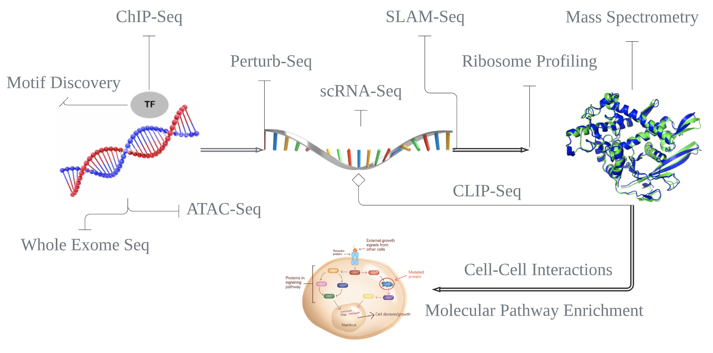
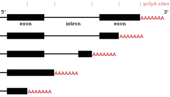
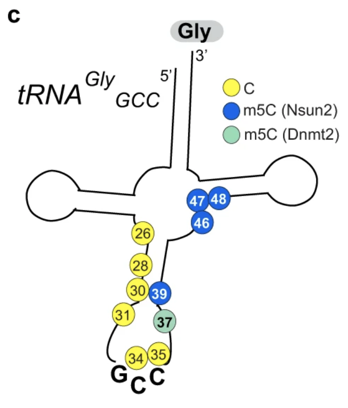
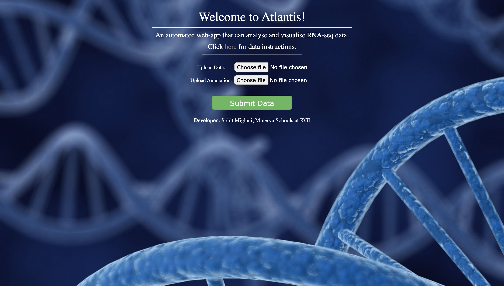

Sohit Miglani
PhD Student, Quantitative Biology @ Princeton University
B.S. Computer Science, Minerva University
Bioinformatics | Functional Genomics | Proteomics | Therapeutics
I am a mathematician turned biologist with 3 years of experience using computational and experimental approaches in functional genomics.
I have a passion for building biologically-informed tools and protocols that can guide us towards hidden patterns. I also hold proficiency in
experimental biology to prepare my own libraries and functionally validate my results.
My experience with DNA and RNA is summarized in this flowchart:

Recent Contributions

Machine learning for discovering alternative polyA-site switches
October 2021
-Link to publication
-Link to Repository
Statistical Learning to estimate stalling in Glycine Codons after tRNA knockout
March 2021
-Link to Nature Comms publication
-Link to Repository
Automated web-app for QC and Visualisations of RNA-seq data
May 2020
-Link to deployed application.
-Link to repository.
Research Experience
Graduate Student Researcher, Princeton University
Princeton, NJ | August 2022 - Present
Junior Specialist II, University of California San Francisco.
San Francisco, CA | September 2020 - June 2022
- Single cell RNA-sequencing, Lineage Tracing, Ribosome Profiling, CRISPR Screens.Research Intern, Trex Bio.
San Francisco, CA | July 2020 - September 2020
- Single cell RNA-sequencing, Cell-Cell Interactions, RShiny App Development.Research Intern, University of Chicago
Chicago, IL | September 2019 - September 2020
- Whole Exome Sequencing, Variant Callers, Parallel Computing.Teaching Assistant, Minerva University
San Francisco, CA | January 2019 - May 2020
- Econometrics, Causal Inference, Biological Systems, Statistics in R and Stata.Summer Scholar, Novartis Institutes for Biomedical Research
Boston, MA | June 2019 - August 2019
- RNA-Sequencing, Drug Sensitivity Testing, Machine Learning.Awards and Honors:
- 2022: Institute Scholar Award, Lewis-Sigler Institute for Integrative Genomics, Princeton University
- 2020: Most Energy Efficient/Sustainable Energy Hack Award, TreeHacks 2020, Stanford University
- 2019: Fellow of Impact Labs Coalition, a selective community of data scientists in the US.
- 2017: Finalists at YouFab Global Creative Awards for the VIVITA Project in Tokyo.
- 2016: Barbara Wiedner and Dorothy Vandercook Memorial Foundation Scholarship
- 2016: Young Leaders for Active Citizenship, Summer Camp, Full Scholarship
- 2015 KVPY Young Scientists Fellowship Recipient, Indian Institute of Science, Bangalore
Recent Articles from my blog:
Select Publications
Regulation of eIF4E Guides a Unique Translational Program to Control Erythroid Maturation.
Co-Author | San Francisco, CA | June 2022
A metastasis-suppressive pathway of mRNA processing governs translational control from the nucleus.
Co-Author | San Francisco, CA | October 2021
- Modulating HNRNPC impacts the metastatic capacity of breast cancer cells in xenograft models.
- Link to paper.
ERα is an RNA-binding protein sustaining tumor cell survival and drug resistance
Co-Author | San Francisco, CA | July 2021
- ERα, a transcription factor critical for breast cancer, is an RNA-binding protein regulating post-transcriptional expression of stress response genes.
- Link to paper.
Neuronal Nsun2 deficiency produces tRNA epitranscriptomic alterations and proteomic shifts impacting synaptic signaling and behavior
Co-Author | San Francisco / NYC | March 2021
- Tracing tRNA functions in brain proteomic landscape, and its effect on cognition and behavior.
- Link to paper.

Androgen Signaling Regulates SARS-CoV-2 Receptor Levels and Is Associated with Severe COVID-19 Symptoms in Men
Contributor | San Francisco, CA | October 2020
- Elevated androgen increases COVID-19 susceptibility and severity in men.
- Androgen signaling inhibition reduces SARS-CoV-2 infection in hESC lung organoids.
- Link to paper in Cell Stem-Cell.
Other Experiences
Data Science Intern, Clean Energy Associates
San Francisco, CA (Remote) | May 2018 - March 2020
- Dashboard Design, Analytics, Database Management, Operational Efficiency.Data Science Intern, Softbank Ventures
Seoul, South Korea | October 2017 - December 2017
- Investment Analysis, Research, Designing Rubrics for startup evaluation.Summer Analyst, Mistletoe Ventures
Tokyo, Japan | June 2017 - August 2017
- Education Technology, Hands-On and Accessible Learning, Web Development.Technical Projects
Computational Statistics and Machine Learning
Machine learning model for breast cancer detection
February 2019
- Consolidated a public dataset of 700 breast cancer images and trained a Random Forest and SVM for a comparative analysis.
- Devised an innovative probabalistic analysis model that extracts probabilities from sklearn's algorithms to redfine decision boundaries based on the bias in the initial algorithm.
- Link to Repository
Machine learning model for predicting loan application decisions
January 2019
- Used a public dataset of ~1 million loan applications and trained an ML model to automatically predict loan application decisions.
- Used approximation models to fill missing data.
- Completed a report on the importance of feature engineering and probabilistic analysis for best results.
- Link to Repository
Machine learning model for image analysis of clothes
March 2019
- Trained a machine learning model over the shirts/jerseys dataset.
- Used cross validation techniques, feature reduction (PCA) and image processing techniques to achieve 97% accuracy on classification.
- Conduced a comparative analysis on the accuracy of decision boundaries in PCA Vs. LDA for image classification.
- Link to Repository
Automated Bayesian Inference Model for prediction of atmospheric CO2
December 2018
- Trained a PyStan model over the CO2 levels for the last 60 years.
- Utilized the model for prediction of CO2 levels in the next 40 years.
- The model also uses gradually increasing confidence intervals to predict CO2 levels based on 3 different scenarios (decreasing, constant and increasing global temperatures)
- Link to Repository
Analytical pricing model for grocery stores in Berlin
November 2018
- Trained a PyStan model over price data from 60 stores.
- Built visualizations in Python to understand various factors that make up the price of a commodity in Berlin.
- Built a regression model to understand the relation of product prices with rent in different areas of Berlin.
- Link to Repository
Modelling Financial Transactions using Kernel Density models
March 2019
- Trained kernel density models on a dataset of financial transactions.
- Modelled the number of transactions, the day of the transacton and month of a transaction to understand user behavior.
- Extracted insights on using density models to track fraud transactions.
- Link to Repository
Simulations, Networks and Object-Oriented Programming
A complex real-life simulation of a Roomba Vacuum Cleaner
April 2019
- Built a complex simulation of a Roomba Vacuum Cleaner in Python
- Built advanced rules for a realistic and intelligent vaccum cleaner.
- Watch the simulation in action here.
- Link to Repository
A simulation of interactions and change of opinions in humans
March 2019
- Built a simulation to understand social dynamics and the trajectory of opinions in a society as humans interact
- Coded intelligent rules for network nodes (humans) to exchange opinions and build/break relationships.
- Link to Repository
A simple simulation of a Rocket using Object Oriented Programming
February 2019
- Built a simple simulation to showcase the use of Python classes for simulation
- Link to Repository
Looking for a computational biologist or data scientist? Look at my CV here. My contact details are inside it.